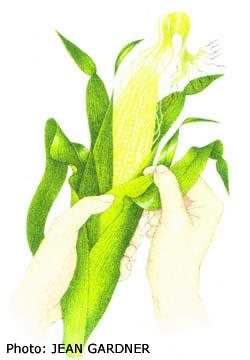

Country Lore
While modern in many ways, I admire the old ways before the advent of freezers. The hardy pioneers and Mormons who homesteaded the West used their ingenuity and imaginations to eke out a living, store their harvests and prosper. Taking a tip from them, I oven dry a good share of my harvest, both for my own enjoyment and for the well-being of my family. Of all the foods I preserve in this way, the process of drying corn and the sweet result of it is the most pleasurable.
When corn is ready to pick, I carefully select the best ears, husk and silk them, leaving the last bit of stump-end (close to the ear) and the tip-end intact. The stump makes a good handhold, and the tip a good rest, when cutting the corn from the cob.
I lose as little time as possible in preparation so none of the goodness is lost. First, I plunge the ears into a large covered kettle of boiling water for five minutes to set the milk in the kernels, then dunk them in cold water with ice cubes to stop the cooking.
After the corn is cooled enough to handle, I cut the kernels off the cob, holding the ear upright by the little stump and using a sharp paring knife to cut downward toward the tip-end, being careful not to cut too close to the cob. Then I scrape the cob, using the back of the knife, to get all the milk and kernel hearts.
I set the oven on warm, spread the corn evenly in large trays or cake pans to a depth of one to one and a half inches, then slide the pans into the oven and leave them there for two or three nights or until corn is thoroughly dried. Mornings, hake the trays out to rest and to free up the oven for other cooking.
I stir the corn a few times each day to ensure even drying throughout. The corn will keep for any length of time with no additives whatsoever.
You can expect the corn to shrink up to as much as half its original bulk during the drying process. A gallon jar will hold the equivalent of five dozen ears. Coffee cans, canning jars and even plastic bags will serve as well whatever fits your storage capacity.
To early settlers, no Thanksgiving dinner was complete without dried corn, and recipes were handed down from generation to generation. Today's version is as follows:
Mix:
1 cup dried corn
2 cups cold water Soak two hours. Do not drain. Add:
1/2 teaspoon salt (or sea salt)
1 tablespoon honey
pepper to taste
Cover and cook slowly until the kernels are tender (50 to 60 minutes). Correct seasonings if desired. Add butter. Serve in sauce dishes, broth and all. If you like, add two tablespoons milk. Serves four to six.
Doric E. Stebbins
Danville, Vermont
|
 |
|
|